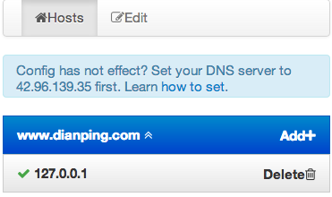

About
Hostd是面向DNS客户端的一个管理BlackHole的DNS配置的工具。
它提供Web页面和http接口，用户可以在hostd里修改DNS配置(仅对自己生效)，是一个跨平台的域名绑定工具，用于开发和生产环境的域名切换。它解决了hosts配置管理不方便，以及移动设备难以修改hosts文件的问题。
Demo
在示例中，我们尝试将"www.dianping.com"域名指向本地，以便测试。
进入hostd页面，修改配置的界面如下：

然后使用nslookup进行测试。
nslookup www.dianping.com 42.96.139.35
Server: 42.96.139.35
Address: 42.96.139.35#53
Non-authoritative answer:
Name: www.dianping.com
Address: 127.0.0.1
于是我们完成了绑定。取消配置的选定，则会回到正常IP。
点击这里查看页面演示